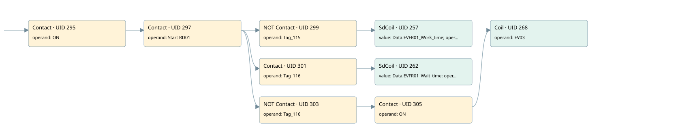

rd01
motors 1 · 검색 색인 순서 9 · 원본 내부 NID 추정 8
백업 PLF 원본의 2785045 바이트 위치에서 복원한 XML. 검색 문서 1938의 객체 키 161022008a11000000000000와 연결했다. 이름 해석 11/11개. 남은 RefId는 상수 또는 미해석 참조다.
연결 구조 다시 그리기
원본 Part/PCon/Wire를 이용한 연결도다. TIA 화면의 래더 배치 또는 실행 결과를 재현한 그림은 아니다. 핀 연결은 아래 표와 원본 XML을 기준으로 읽는다. 노드 위에 마우스를 두면 피연산자 이름을 볼 수 있다.

접점·코일·블록과 피연산자
| Part UID | Gate | Negated 핀 | 연결 피연산자 |
|---|---|---|---|
| 295 | Contact | operand = ON | |
| 297 | Contact | operand = Start RD01 | |
| 299 | Contact | operand | operand = Tag_115 |
| 257 | SdCoil | value = Data.EVFR01_Work_time; operand = Tag_116 | |
| 301 | Contact | operand = Tag_116 | |
| 262 | SdCoil | value = Data.EVFR01_Wait_time; operand = Tag_115 | |
| 303 | Contact | operand | operand = Tag_116 |
| 305 | Contact | operand = ON | |
| 268 | Coil | operand = EV03 |
접점 경로를 펼친 조건식
Contact·O/A·비교기의 원본 연결을 읽기 쉽게 펼친 보조 해석이다. POWER는 전원 레일 시작을 뜻한다. 호출 블록·에지·타이머의 내부 동작과 다중 쓰기 순서는 이 표로 실행 검증하지 않았다. 미해석 핀과 RefId는 원문 연결표에서 확인한다.
| UID | 동작 | 대상 | 원본 접점 경로 | 내용 |
|---|---|---|---|---|
| 257 | SdCoil | Tag_116 | ((ON AND Start RD01) AND NOT [Tag_115]) | 시간 동작 SdCoil; 타이머 의미 추가 확인 / 시간 인자 Data.EVFR01_Work_time |
| 262 | SdCoil | Tag_115 | ((ON AND Start RD01) AND Tag_116) | 시간 동작 SdCoil; 타이머 의미 추가 확인 / 시간 인자 Data.EVFR01_Wait_time |
| 268 | Coil | EV03 | (((ON AND Start RD01) AND NOT [Tag_116]) AND ON) | 조건에 따른 Coil 기록 |
원본 배선 연결
| Wire UID | 동일 Wire 연결 끝점 |
|---|---|
| 307 | Powerrail {} ↔ Part 295.in |
| 280 | ORef 269 (ON) ↔ Part 295.operand |
| 296 | Part 295.out ↔ Part 297.in |
| 281 | ORef 270 (Start RD01) ↔ Part 297.operand |
| 298 | Part 297.out ↔ Part 299.in ↔ Part 301.in ↔ Part 303.in |
| 283 | ORef 272 (Tag_115) ↔ Part 299.operand |
| 300 | Part 299.out ↔ Part 257.in |
| 282 | ORef 271 (Data.EVFR01_Work_time) ↔ Part 257.value |
| 285 | ORef 273 (Tag_116) ↔ Part 257.operand |
| 287 | ORef 275 (Tag_116) ↔ Part 301.operand |
| 302 | Part 301.out ↔ Part 262.in |
| 286 | ORef 274 (Data.EVFR01_Wait_time) ↔ Part 262.value |
| 289 | ORef 276 (Tag_115) ↔ Part 262.operand |
| 290 | ORef 277 (Tag_116) ↔ Part 303.operand |
| 304 | Part 303.out ↔ Part 305.in |
| 291 | ORef 278 (ON) ↔ Part 305.operand |
| 306 | Part 305.out ↔ Part 268.in |
| 293 | ORef 279 (EV03) ↔ Part 268.operand |
식별자 해석 근거 11개
| ORef UID | RefId | 이름 | IdentXmlPart 파일 | 해석 방법 |
|---|---|---|---|---|
| 269 | 1 | ON | 0602-IdentXmlPart.xml | UID/RID + search-text + NID agreement |
| 270 | 48 | Start RD01 | 0602-IdentXmlPart.xml | UID/RID + search-text + NID agreement |
| 272 | 49 | Tag_115 | 0602-IdentXmlPart.xml | UID/RID + search-text + NID agreement |
| 273 | 51 | Tag_116 | 0602-IdentXmlPart.xml | UID/RID + search-text + NID agreement |
| 271 | 50 | Data.EVFR01_Work_time | 0604-IdentXmlPart.xml | UID/RID + search-text + NID agreement |
| 275 | 51 | Tag_116 | 0602-IdentXmlPart.xml | UID/RID + search-text + NID agreement |
| 276 | 49 | Tag_115 | 0602-IdentXmlPart.xml | UID/RID + search-text + NID agreement |
| 274 | 52 | Data.EVFR01_Wait_time | 0604-IdentXmlPart.xml | UID/RID + search-text + NID agreement |
| 277 | 51 | Tag_116 | 0602-IdentXmlPart.xml | UID/RID + search-text + NID agreement |
| 278 | 1 | ON | 0602-IdentXmlPart.xml | UID/RID + search-text + NID agreement |
| 279 | 53 | EV03 | 0602-IdentXmlPart.xml | UID/RID + search-text + NID agreement |
검색 코드 보조 자료
참조 명칭을 찾기 위한 자료이며 실행 순서나 AND/OR 관계는 위 연결표로 확인한다.
"on" "start rd01" "tag_115" "tag_116" "data".evfr01_work_time "tag_116" "tag_115" "data".evfr01_wait_time "tag_116" "on" "ev03"